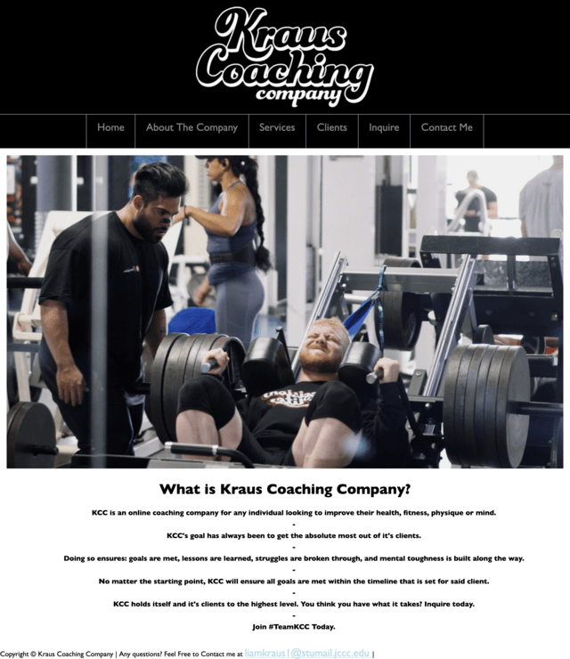
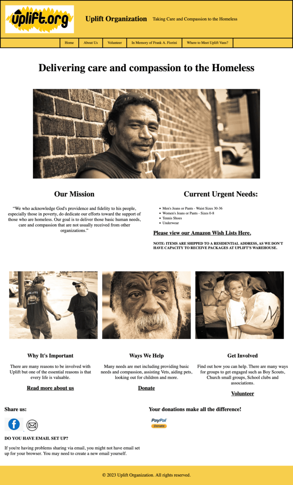
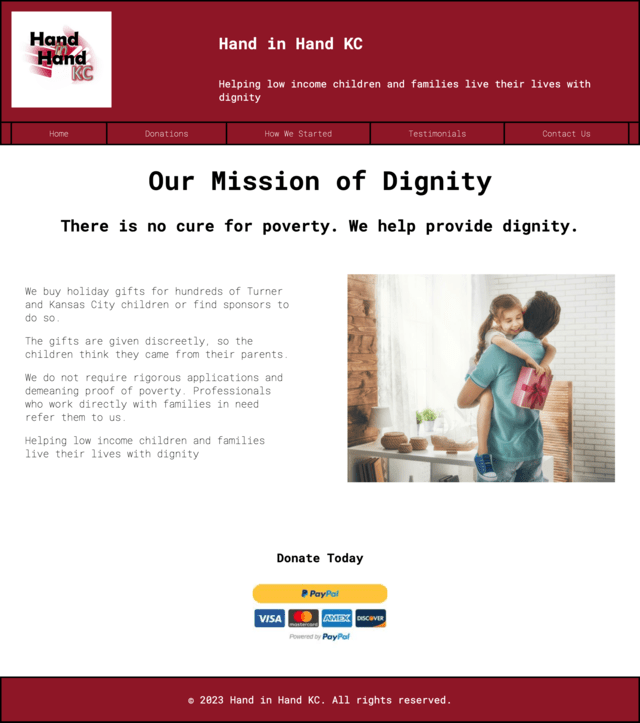

Kraus Coaching Company
The first website I built in the HTML/CSS I class. This is a website describing the services my online coaching business offers.

Uplift
Uplift is currently a Non-profit organization in Kansas City. As a project in CSS Techniques, I rebuilt their website as a much needed refresh was necessary.

Hand In Hand KC
Hand in Hand KC is currently a Non-profit organization in Kansas City. As a project in HTML/CSS II, I rebuilt their website as I enjoyed helping Uplift prior.
